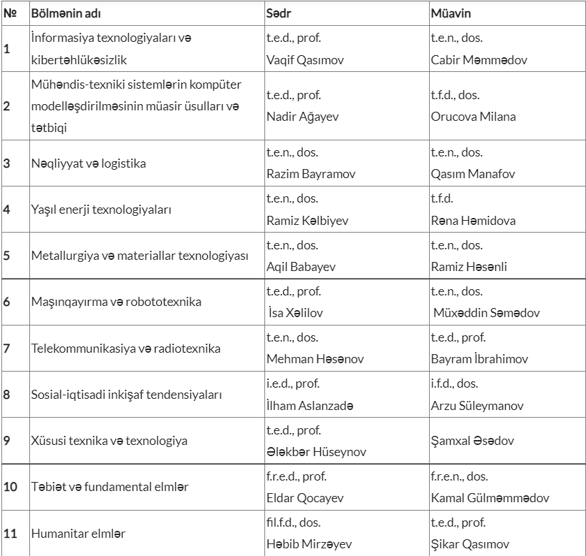

Gənclər və Elmi innovasiyalar
4-5 may 2022-ci il tarixlərində Azərbaycan xalqının ümummilli lideri Heydər Əliyevin
anadan olmasının 99-cu ildönümünə həsr olunmuş tələbə və gənc tədqiqatçıların
“Gənclər və elmi innovasiyalar” mövzusunda Respublika elmi-texniki konfransı
keçiriləcəkdir.
Konfransın keçirilməsinin əsas məqsədi gəncləri elmi yaradıcılığa fəal surətdə cəlb
etmək və onların apardıqları elmi tədqiqat işlərinin nəticələrinin müzakirəsini
təşkil etməkdir.
Prof. Vilayət Vəliyev - AzTU-nun rektoru (sədr)
Prof. Nurəli Yusifbəyli - Tədris işləri üzrə prorektor (sədr müavini)
Prof. Çetin Elmas - Elm və innovasiya üzrə prorektor
Prof. Sübhan Namazov - Beynəlxalq əlaqələr üzrə prorektor
i.f.d. Kamran Rəsulov - Sosial məsələlər və ictimaiyyətlə əlaqələr üzrə prorektor
i.f.d. Rəşad Əliyev - Rəqəmsallaşma və layihələr üzrə prorektor
i.f.d. Rəşad Kazımov - Maliyyə-təsərrüfat işləri üzrə prorektor
Əbülfəz Talıbov - Ümumi işlər üzrə prorektor
Fariz Məmmədov - Rektorun elmi-tədqiqat məsələləri üzrə müşaviri
Prof. İlham Pirməmmədov – AzTU Rektorunun müşaviri
f.f.d. Nağı Qasımov - Tədqiqat və inkişaf şöbəsinin müdir müavini (elmi katib)
Dos. Ərəstun Məmmədov - AzTU-nun Tədris hissəsinin müdiri
Prof. Yusuf Sönmez - Yüksək Təhsil İnstitutunun direktoru
Vüqar Hüseynli - AzTU-nun TEC-nin sədri (məsul katib)
Dos. Allahverdi Şərifov - Nəqliyyat və logistika fakültəsinin dekanı
Dos. Hüseynqulu Quliyev - Energetika və avtomatika fakültəsinin dekanı
Dos. Nizami Poladov - Metallurgiya və materialşünaslıq fakültəsinin dekanı
Dos. Malik Qarayev - Maşınqayırma və robototexnika fakültəsinin dekanı
Dos. Taleh Şirinov - İnformasiya və telekommunikasiya texnologiyaları fakültəsinin dekanı
Dos. Fərqanə Musayeva - İqtisadiyyat və idarəetmə fakültəsinin dekanı
Dos. Elçin Rzayev - Xüsusi texnika və texnologiya fakültəsinin dekanı
Səfa Bağırov - Media ilə iş və kommunikasiya şöbəsinin müdir müavini
Əli Xəlilov - İnformasiya və kommunikasiya texnologiyaları şöbəsinin müdiri
Mirməhəmməd Ələkbərli - Tələbə Həmkarlar İttifaqı Komitəsinin sədri
Eyvaz Məhəmmədli - Tələbə Gənclər Təşkilatının sədr əvəzi
Sevinc İsgəndərova - Mətbuat katibi
Prof. Nurəli Yusifbəyli - Tədris işləri üzrə prorektor (sədr müavini)
Prof. Çetin Elmas - Elm və innovasiya üzrə prorektor
Prof. Sübhan Namazov - Beynəlxalq əlaqələr üzrə prorektor
i.f.d. Kamran Rəsulov - Sosial məsələlər və ictimaiyyətlə əlaqələr üzrə prorektor
i.f.d. Rəşad Əliyev - Rəqəmsallaşma və layihələr üzrə prorektor
i.f.d. Rəşad Kazımov - Maliyyə-təsərrüfat işləri üzrə prorektor
Əbülfəz Talıbov - Ümumi işlər üzrə prorektor
Fariz Məmmədov - Rektorun elmi-tədqiqat məsələləri üzrə müşaviri
Prof. İlham Pirməmmədov – AzTU Rektorunun müşaviri
f.f.d. Nağı Qasımov - Tədqiqat və inkişaf şöbəsinin müdir müavini (elmi katib)
Dos. Ərəstun Məmmədov - AzTU-nun Tədris hissəsinin müdiri
Prof. Yusuf Sönmez - Yüksək Təhsil İnstitutunun direktoru
Vüqar Hüseynli - AzTU-nun TEC-nin sədri (məsul katib)
Dos. Allahverdi Şərifov - Nəqliyyat və logistika fakültəsinin dekanı
Dos. Hüseynqulu Quliyev - Energetika və avtomatika fakültəsinin dekanı
Dos. Nizami Poladov - Metallurgiya və materialşünaslıq fakültəsinin dekanı
Dos. Malik Qarayev - Maşınqayırma və robototexnika fakültəsinin dekanı
Dos. Taleh Şirinov - İnformasiya və telekommunikasiya texnologiyaları fakültəsinin dekanı
Dos. Fərqanə Musayeva - İqtisadiyyat və idarəetmə fakültəsinin dekanı
Dos. Elçin Rzayev - Xüsusi texnika və texnologiya fakültəsinin dekanı
Səfa Bağırov - Media ilə iş və kommunikasiya şöbəsinin müdir müavini
Əli Xəlilov - İnformasiya və kommunikasiya texnologiyaları şöbəsinin müdiri
Mirməhəmməd Ələkbərli - Tələbə Həmkarlar İttifaqı Komitəsinin sədri
Eyvaz Məhəmmədli - Tələbə Gənclər Təşkilatının sədr əvəzi
Sevinc İsgəndərova - Mətbuat katibi

1. Müəlliflər tezislərini aztuconference.aztu.edu.az saytında qeydiyyatdan keçməklə
göndərən zaman mütləq aid olduğu konfrans bölməsini qeyd etməlidir.
2. Konfransa tezis göndərildikdə müəllif haqqında aşağıdakı məlumatlar qeyd edilməlidir: müəllifin tam adı (soyadı, adı, atasının adı), elmi dərəcəsi, elmi adı, iş yeri, vəzifəsi, telefon nömrəsi, tezisin adı, konfransın bölmə nömrəsi və adı elektron formada təqdim olunur.
3. Tezis azərbaycan, rus və ya ingilis dilində təqdim olunmalıdır. Tezisin əvvəlində 3 dildə (tezisin təqdim edildiyi və digər 2 konfrans dilində) tezisin adı, xülasə (50 – 100 söz) və açar sözlər (3 - 5 sayda) verilməlidir.
4. Məqalə MS Word proqramında A4 formatında (sol və sağ – 2 sm, yuxarı və aşağı – 2,5 sm), Times New Roman şrifti ilə 12 pt ölçüdə, 1,0 sətirlərarası intervalla və mətndaxili yazıda abzas 1 sm buraxmaqla eninə hazırlanmalıdır.
5. Məqalə aşağıdakı ardıcıllıqla hazırlanmalıdır: məqalənin adı – ortada, böyük hərflərlə, qalın şriftlə, sonda 6 pt interval, müəllif(lər)in tam adı – ortada; müəllif(lər)in iş yeri, şəhər və ölkə – ortada, sonda 6 pt interval (əgər müəlliflər müxtəlif təşkilatları təmsil edirlərsə, müəllifin və təşkilatın adı yuxarı indekslə nömrələnir), e-mail ünvanı.
6. Ədəbiyyat siyahısı: hər bir istinad olunan mənbənin adı tərcümə olunmadan, məqalədə istifadə olunma ardıcıllığına uyğun olaraq nömrələnir.
7. Məqalədə cədvəl və şəkillər nömrələnir: cədvəl – cədvəlin yuxarısında, sağdan (məs., Cədvəl 1), şəkil – şəklin altında, ortadan (məs., Şəkil 1) və mətn hissədən (yuxarıdan və aşağıdan) 1 boş sətir buraxmaqla göstərilir.
8.Riyazi ifadələr MS Word proqramının düstur redaktoru (Equation) ilə tərtib olunur. Yalnız mətndə istinad olunan düsturlar nömrələnir. Düstur sətrin ortasında, nömrəsi isə sağda mötərizədə yazılır.
9. Məqalə bir sütunlu mətn formatında təqdim edilməli və 2-5 səhifə aralığında olmalıdır.
2. Konfransa tezis göndərildikdə müəllif haqqında aşağıdakı məlumatlar qeyd edilməlidir: müəllifin tam adı (soyadı, adı, atasının adı), elmi dərəcəsi, elmi adı, iş yeri, vəzifəsi, telefon nömrəsi, tezisin adı, konfransın bölmə nömrəsi və adı elektron formada təqdim olunur.
3. Tezis azərbaycan, rus və ya ingilis dilində təqdim olunmalıdır. Tezisin əvvəlində 3 dildə (tezisin təqdim edildiyi və digər 2 konfrans dilində) tezisin adı, xülasə (50 – 100 söz) və açar sözlər (3 - 5 sayda) verilməlidir.
4. Məqalə MS Word proqramında A4 formatında (sol və sağ – 2 sm, yuxarı və aşağı – 2,5 sm), Times New Roman şrifti ilə 12 pt ölçüdə, 1,0 sətirlərarası intervalla və mətndaxili yazıda abzas 1 sm buraxmaqla eninə hazırlanmalıdır.
5. Məqalə aşağıdakı ardıcıllıqla hazırlanmalıdır: məqalənin adı – ortada, böyük hərflərlə, qalın şriftlə, sonda 6 pt interval, müəllif(lər)in tam adı – ortada; müəllif(lər)in iş yeri, şəhər və ölkə – ortada, sonda 6 pt interval (əgər müəlliflər müxtəlif təşkilatları təmsil edirlərsə, müəllifin və təşkilatın adı yuxarı indekslə nömrələnir), e-mail ünvanı.
6. Ədəbiyyat siyahısı: hər bir istinad olunan mənbənin adı tərcümə olunmadan, məqalədə istifadə olunma ardıcıllığına uyğun olaraq nömrələnir.
7. Məqalədə cədvəl və şəkillər nömrələnir: cədvəl – cədvəlin yuxarısında, sağdan (məs., Cədvəl 1), şəkil – şəklin altında, ortadan (məs., Şəkil 1) və mətn hissədən (yuxarıdan və aşağıdan) 1 boş sətir buraxmaqla göstərilir.
8.Riyazi ifadələr MS Word proqramının düstur redaktoru (Equation) ilə tərtib olunur. Yalnız mətndə istinad olunan düsturlar nömrələnir. Düstur sətrin ortasında, nömrəsi isə sağda mötərizədə yazılır.
9. Məqalə bir sütunlu mətn formatında təqdim edilməli və 2-5 səhifə aralığında olmalıdır.
"Gənclər və elmi innovasiyalar” mövzusunda Respublika elmi-texniki konfransına
məruzələrin qəbulu üçün son tarix: 15.04.2022